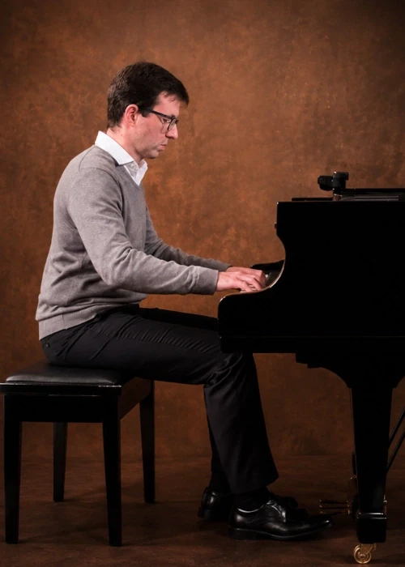
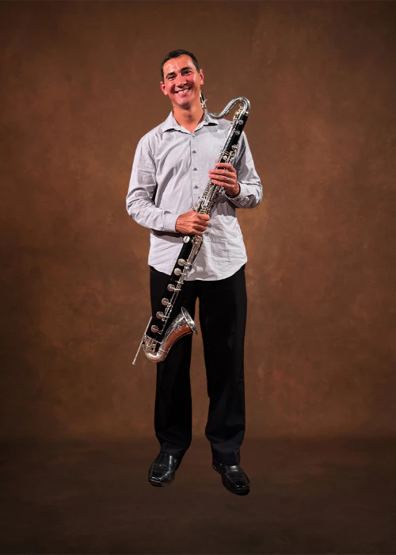
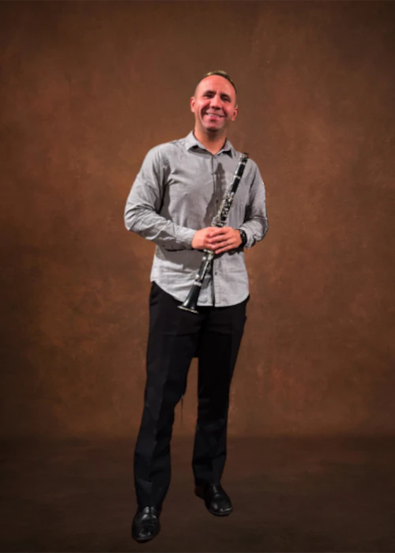

Integrantes
Espaço para apresentar a trajetória artística, formação e
principais atuações dos músicos do trio.

Ralph Nowakowski Biscouto
Ralph Nowakowski Biscouto é pianista, natural de Curitiba, Paraná. Iniciou seus estudos musicais aos sete anos na Academia de Música Som Livre, sob orientação da professora Lislie Moraes de Carvalho. Posteriormente, foi admitido, por meio de processo seletivo, no curso de extensão em piano da Escola de Música e Belas Artes do Paraná (EMBAP).
Nessa instituição, atual Universidade Estadual do Paraná (UNESPAR), concluiu o Curso Superior de Instrumento e a Especialização em Performance Musical, na classe do professor Sérgio T. André. Ao longo de sua formação, participou de aulas e masterclasses com importantes pianistas, entre os quais, Leilah Paiva, Marcilda Clis, Ney Fialkow, Beatriz Furlanetto e Clenice Ortigara.
Sua trajetória inclui premiações e participações como finalista em competições nacionais e internacionais. Entre os principais destaques, estão o primeiro lugar no V Concurso Nacional da EMBAP, o primeiro lugar no XXI Concurso Latino-Americano Rosa Mística, o primeiro lugar no I Concurso de Piano Prof.ª Edna Bassetti Habith, além de menções honrosas por melhor interpretação de obras de autor brasileiro e estrangeiro. Também, foi finalista no III Concurso Internacional Honorina Barra, conquistou o segundo lugar no I Concurso Infanto-Juvenil de Piano da ABPP, com destaque para melhor interpretação de obras barroca e contemporânea, e o terceiro lugar no II Concurso Nacional Infanto-Juvenil de Piano da Associação Brasileira de Professores de Piano (ABPP).
Ao longo dos anos, apresentou-se como solista e camerista em diversos concertos, festivals e séries musicais, como o II Encontro de Inverno da ABPP, o ciclo Jovens Intérpretes Paranaenses, o I Festival de Artes do Colégio Militar de Curitiba — Liberdarte, o I Festival de Música do Cenáculo da Igreja da Ordem, o IV Festival Penalva, a série Música na Igrejinha, a Série Grandes Mestres e a Série Sextas Musicais.
Atuou como pianista convidado da banda sinfônica da 37ª Oficina de Música de Curitiba, sob regência de Edivaldo Chiquini, e executou, junto à Camerata Antiqua de Curitiba, sob regência de Márcio Steuernagel, as obras finalistas do concurso nacional de composição da IV Bienal Música Hoje.
Atualmente, desenvolve atividades como solista e camerista, integrando o Haicai Trio.

Mateus Falkemback
Mateus Falkemback é clarinetista e claronista, natural de Santa Maria, Rio Grande do Sul. Iniciou seus estudos musicais aos seis anos com seu pai, Aragão Borges Falkemback, e teve seu primeiro contato com a clarineta aos quinze anos, sob orientação do professor Adão Batista de Melo.
Foi integrante da Orquestra Sinfônica Jovem de Santa Maria, participando de apresentações no Brasil e no exterior. Em 2005, ingressou no Bacharelado em Clarineta da Universidade Federal de Santa Maria, na classe do professor Guilherme Garbosa, posteriormente transferindo sua formação para a Universidade Federal do Estado do Rio de Janeiro (UNIRIO), onde estudou com os professores Fernando Silveira e Marcos Passos.
Participou de masterclasses e aperfeiçoamentos com renomados clarinetistas, entre os quais, Cristiano Alves, Yang Gao, Laura Sanchez, José Botelho e Jorge Montilla.
Como integrante e fundador do Quarteto de Clarinetas Ômega, representou o Brasil no XXI Festival Internacional de Orquestras Jovens da Europa (Eurochestries), na França, retornando ao país em turnê internacional. Com o grupo, conquistou o primeiro lugar no II Concurso de Piano e Música de Câmara Eduardo Tagliatti e no II Concurso de Música de Câmara Furnas Festival Villa-Lobos.
Atuou junto à Orquestra Sinfônica Brasileira e integrou a Banda Filarmônica do Rio de Janeiro entre 2010 e 2019, inicialmente como clarinetista baixo e, posteriormente, como clarinetista spalla, apresentando-se em importantes salas de concerto do Estado. Nesse período, realizou a estreia mundial da obra Bass Clarinet Speedway, de Armando Ghidoni, escrita em sua homenagem.
Em 2015, foi contemplado com bolsa de intercâmbio para a University of Georgia (Estados Unidos), à qual retornou em 2017 para cursar o Mestrado em Performance em Clarineta, sob orientação do professor Dr. David Ray McClellan. Durante sua permanência na instituição, atuou como bolsista de ensino, organizou masterclasses, integrou grupos de música contemporânea e foi vencedor do concurso de solistas da universidade, apresentando o Concerto para Clarineta de Mozart.
Ao retornar ao Brasil, participou de produções da Orquestra Sinfônica do Theatro Municipal do Rio de Janeiro e, desde 2021, integra a Banda do Exército Brasileiro em Curitiba. É membro do Quarteto Paran4, tendo participado da organização do I Festival de Clarinetas de Curitiba.
Atualmente, integra o Haicai Trio e atua como músico convidado da Orquestra Sinfônica do Paraná, da Orquestra Filarmônica SCAR, da Orquestra da PUCPR e de diversos grupos camerísticos e bandas sinfônicas da região Sul do Brasil.

Samuel Júnior
Samuel Júnior é clarinetista, professor e músico, natural de Curitiba, Paraná. Iniciou seus estudos musicais aos sete anos com seu pai, Samuel Pinheiro dos Santos, e aprofundou sua formação no Conservatório de Música Popular Brasileira de Curitiba, onde estudou com o professor Sérgio Albach.
É bacharel em clarineta pela Escola de Música e Belas Artes do Paraná (Universidade Estadual do Paraná – EMBAP/UNESPAR), sob orientação do professor Maurício Carneiro, e pós-graduado em Educação Musical pela mesma instituição. Em 2018, participou do Mestrado em Clarineta na Liszt Ferenc Academy of Music, em Budapeste, Hungria, sob orientação do professor Balázs Rumy.
Ao longo de sua trajetória, participou de importantes festivais nacionais e internacionais, como a Oficina de Música de Curitiba, o Festival Internacional de Música SESC em Pelotas, o Festival de Música nas Montanhas e o FEMUSC (Festival de Música de Santa Catarina), tendo aulas com Ubaldo Versolato, Alexandre Ribeiro, Jean Louis Bergerard, Mariam Adam, Jairo Wilkens, Michel Lethiec, Luís Afonso Montanha, Sérgio Burgani, Joel Barbosa e Tiago Naguel.
Foi clarinetista da Orquestra à Base de Sopro de Curitiba, onde atuou ao lado de artistas como Waltel Branco, Léa Freire e Roberto Sion. Entre 2014 e 2016, atuou como primeiro clarinetista e chefe das madeiras da Orquestra Sinfônica de Ponta Grossa, sob direção artística do maestro Jorge Augusto Scheffer. Também, foi músico convidado da Orquestra Sinfônica do Paraná, entre 2016 e 2018.
Como solista, foi vencedor do Programa Prelúdio, realizado pela TV Cultura, sob direção musical do maestro Júlio Medaglia. Na música de câmara, com o duo Dualidade Sonora, conquistou o 1º lugar no V Concurso de Música de Câmara do Festival Villa-Lobos, realizado na Universidade Federal do Rio de Janeiro.
Atualmente, integra o Haicai Trio, atua como músico convidado da Camerata Antiqua de Curitiba e exerce atividades como clarinetista, professor e pesquisador da música de câmara.